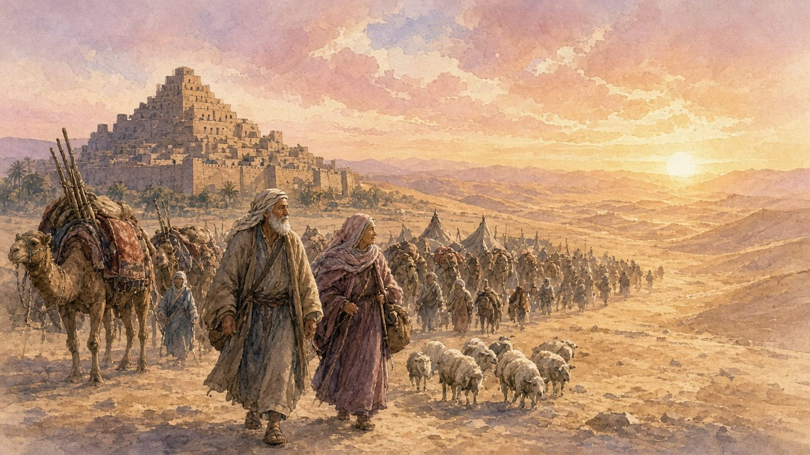

📜 Parashat Lech Lecha (לך לך): The Trip With No Map
Shabbat 24 October 2026 · 13 Cheshvan 5787 · Genesis 12:1–17:27
Cold open: two little words
Two words, and the whole of Jewish history starts moving: lech lecha (לֶךְ לְךָ).
Lech means "go." Easy. But then God adds a second word, lecha, which literally means "to you" or "for you." Go... to you? Go for you? It sounds like a typo. It isn't.
Rashi, the great medieval explainer, says it means "go for your own good": out there you'll have children and become a great nation. The Zohar reads it as "go for yourself, to repair yourself," and later Hasidic teachers made it famous as "go to yourself." So is it a travel itinerary or a therapy session? Stick around. Possibly both.
Last week ended with Avram's father, Terach, setting out from Ur toward Canaan and then... stopping halfway, in Charan. Dad never finished the trip. This week, his son gets the call to finish it.
1. The call with no map
"Go from your land, from your birthplace, and from your father's house, to the land that I will show you."
Notice what's missing. No address. No map. No Google Maps pin. Just "the land I will show you." It's like booking a flight where the destination says TBA.
💡 Did you know? The list goes in reverse order of how a journey actually works. First you leave your father's house, then your hometown, then your country. The Torah lists the biggest thing first and the hardest thing last. Leaving a country is paperwork. Leaving your father's house is personal.
And then the promises: "I will make you a great nation, I will bless you, I will make your name great, and you will be a bracha, a blessing." Not just get blessed. Be one.
How old is Avram when he gets this call? Seventy-five. No retirement village for him. He packs up Sarai his wife, his nephew Lot, all their stuff, and "the souls they had made in Charan," which the rabbis say means the people they'd taught. Off they go.
Flashback (this part is midrash, not in the Torah): Why Avram? The Torah never says. But a famous story in Bereshit Rabbah (38:13) fills in the gap. Terach sold idols, and one day he left young Avram in charge of the shop. A man of about sixty came in to buy one. Avram asked, "How old are you?" "Sixty." "Sixty years old and you want to bow down to something made yesterday?" The man left embarrassed. Then a woman brought a bowl of flour as an offering. Avram took a stick, smashed every idol, and put the stick in the hand of the biggest one. When Terach came home and shrieked, Avram said, "The idols fought over who'd eat first, and the big one smashed the rest." "Idols can't do that!" said Terach. And Avram said, more or less: Exactly. Listen to what you just said.
So the boy who broke the idols becomes the man who walks off the map.

The route goes Charan, then Shechem, then a spot between Beit El and Ai, building altars along the way, then south toward the Negev. Every stop, Avram builds an altar. It's like leaving little "I was here" notes for God.
2. Famine, Egypt, and an awkward hero moment
Here's the twist. Avram finally arrives in the promised land, and the very first thing that happens is... a famine. Welcome to Canaan, nothing to eat.
So Avram goes down to Egypt. Just before they arrive he says to Sarai: "You're very beautiful. When the Egyptians see you, they'll kill me and keep you. Say you're my sister, so it goes well for me."
It goes... not great. Pharaoh's officials praise Sarai, she's taken into Pharaoh's palace, and Avram is showered with sheep, cattle, donkeys and camels. Then God strikes Pharaoh's house with plagues. Pharaoh calls Avram in: "What have you done to me? Why didn't you tell me she was your wife?" And he sends them away, with all their wealth.
This is not a superhero moment, and the Torah doesn't pretend it is. We'll argue about it in the commentary.
💡 Did you know? Read that story again: famine in Canaan, go down to Egypt, Pharaoh, plagues, leave with lots of wealth. That's the whole book of Exodus in miniature. The rabbis noticed this: "whatever happened to the fathers is a sign for the children."
3. Too many sheep: the split with Lot
Back in Canaan, Avram and Lot are now so rich that the land can't hold both their flocks. Their shepherds start fighting.
Avram's solution is a masterclass in not making it worse: "Please, let's not have a fight, you and me, we're family. Isn't the whole land in front of you? If you go left, I'll go right. If you go right, I'll go left."
He gives the younger man first pick. Lot looks out and sees the plain of the Jordan, green and watered "like the garden of God," and picks it. He moves his tent toward a city called Sodom. (Hmm. Remember that name. Next week.)
Then God tells Avram: lift up your eyes, north, south, east and west. All of this is for you and your descendants. Get up, walk the land, its length and its breadth.
4. Avram the action hero
Chapter 14 suddenly turns into a war movie. Four kings fight five kings. The four win, sweep through Sodom, and take everything, including Lot.
Avram, a peaceful shepherd so far, gathers 318 of his trained men, chases the four kings all the way north to Dan, attacks at night, and brings back Lot, the people and all the goods.
💡 Did you know? This is the first time anyone in the Torah is called ha'Ivri (הָעִבְרִי), "Avram the Hebrew." One explanation: ever means "the other side." The whole world was on one side, and Avram was on the other.
On the way home, a mysterious king steps out of nowhere: Malki-tzedek, "king of righteousness," king of Shalem, a priest of God Most High. He brings bread and wine and blesses Avram. Shalem, says the book of Psalms, is another name for Jerusalem.
Then the king of Sodom offers Avram a deal: "Give me the people, you keep the stuff." Avram says no thanks: "Not a thread and not a sandal strap." He won't let anyone say, "I made Avram rich."
5. Count the stars
After all that, God speaks to Avram in a vision: "Don't be afraid, Avram. I am your shield."
And Avram, for the first time, pushes back a little. "What can You give me? I have no children." Everything he's been promised depends on kids, and he has none.
So God takes him outside. "Look up at the sky and count the stars, if you can count them. So will your descendants be."
And the Torah says: "He believed in God." No proof. No baby. Just a very old man, a very big sky, and trust.
💡 Did you know? On a clear night with no city lights, you can see a few thousand stars with the naked eye. Today astronomers estimate the Milky Way alone has somewhere around 100 to 400 billion. Avram had no telescope, but "if you can count them" was a very safe bet.
Then comes the strangest ceremony in the whole Torah: the brit bein habetarim, the covenant between the pieces. Avram cuts animals in half and lays the halves opposite each other. He falls into a deep sleep, and a "great dark dread" falls on him. God tells him: your descendants will be strangers in a land not theirs, enslaved for 400 years, and then they'll come out with great wealth. Then a smoking furnace and a flaming torch pass between the pieces.
So the promise comes with a catch: yes, the land is yours. Just not yet. Not for you, not for your kids, not even for your grandkids.
6. Hagar and the God who sees
Ten years in Canaan and still no children. Sarai has an idea, normal in that world and painful in ours: she gives her Egyptian maid, Hagar, to Avram, so that maybe "I'll be built up through her."
Hagar gets pregnant, and suddenly she looks down on Sarai. Sarai is furious and treats her harshly. Hagar runs away into the desert.
At a spring of water on the road to Shur, an angel finds her. "Hagar, maid of Sarai, where have you come from, and where are you going?" Two of the hardest questions there are.
The angel tells her to go back, and promises her a son: call him Yishmael (יִשְׁמָעֵאל), "God hears," because God has heard your suffering.
And then Hagar does something remarkable. She gives God a name of her own: El Ro'i (אֵל רֳאִי), "the God who sees me." The runaway servant, the one nobody noticed, is the one who announces: I am seen.
💡 Did you know? The well got a name too: Be'er Lachai Ro'i, "the well of the Living One who sees me." Later, Yitzchak will live near that very well. The two half-brothers' stories cross more than you'd expect.
Avram is 86 when Yishmael is born.
7. New names at 99
Thirteen years pass in silence. Then, when Avram is 99, God appears again with a brand-new deal.
"Your name will no longer be Avram. Your name will be Avraham, because I have made you av hamon goyim, a father of many nations." And Sarai becomes Sarah.
💡 Did you know? Both of them get the same letter: heh (ה). Avram gains one and becomes Avraham; Sarai swaps her yud for a heh. Heh is one of the letters in God's own name, and it's the sound of a breath. Some teachers like to say it is as if God breathed a bit of Himself into both their names.
The sign of this covenant is brit milah, circumcision, for every boy at eight days old. Avraham does it that very day, at 99, and Yishmael at 13. (Ouch, both of them.)
And then God says: Sarah will have a son. Next year.
Avraham falls on his face... and laughs. "A hundred-year-old man will have a child? And Sarah, at ninety?" God answers, basically: yes. And call him Yitzchak (יִצְחָק), which means "he will laugh." The kid's name is the joke.
Cliffhanger
So here's where we leave them. A 99-year-old with a new name, a 90-year-old with a new name, a teenage son, and a promise that sounds too good, and too funny, to be true.
They went out without a map. They came back to themselves. And next week, three strangers turn up at the tent, a city is in big trouble, and somebody else is going to laugh. That's Vayera. Stay tuned!
This week at a glance
- Torah reading: Lech Lecha, Genesis 12:1–17:27
- Haftarah: Isaiah 40:27–41:16 ("But you, Israel My servant... seed of Avraham who loved Me," 41:8)
- Hebrew date: 13 Cheshvan 5787
- Candle lighting in Melbourne: Friday 23 October, 7:27pm
- Shabbat ends (Havdalah) in Melbourne: Saturday 24 October, 8:27pm
- Coming up: Sigd, Monday 9 November · Rosh Chodesh Kislev, 10–11 November · first Chanukah candle, Friday 4 December
A question for the Shabbat table
If God said lech lecha to you tomorrow, what goes in your one bag?
אם אלוהים היה אומר לכם מחר ״לֶךְ לְךָ״, מה הייתם שמים בתיק האחד שלכם?
One bag, no destination. What do you pack, and what would you have to leave behind to "go to yourself"? (Grandparents: tell us about the biggest move of your life.)
Shabbat shalom! 🕯️🕯️